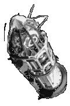

Contents | Features | Reviews | News | Archives | Store |
 |
|
| Movie Credits | Buy It! |
Broken Arrow
Review by Carrie Gorringe
|  | Directed by John Woo. Starring John Travolta, Screenplay by Graham Yost. |
Vic Deakins (Travolta) is a rather urbane individual, in a wry sort of way, somewhat like a James Bond for the scofflaw set. Always calm and collected under (almost) any crisis, he even finds the time to instruct his henchmen on the finer points of criminal equitette. "Would you mind not shooting at the thermonuclear weapons?" he chides one overeager assistant in a tone of barely-restrained disapproval that is usually reserved for the parvenu dinner guest who is vulgar enough to mistake his vichysoisse for the finger bowl. Ah, yes, the thermonuclear weapons ... Roughly some ten to twelve hours earlier in screen time (forty minutes or so in real time), Deakins was actually Major Vic Deakins, a maverick bomber pilot with an axe or two to grind against a military establishment which he believed was not sufficiently appreciative of his considerable talents to provide him with a promotion.
One night, while he and his co-pilot, Riley Hale (Slater) are out on a top-secret war games flight, Deakins hijacks the B-3 stealth bomber in which he and Hale are flying, complete with the aforementioned thermonuclear weapons. Deakins ejects Hale from the cockpit over a vast stretch of desert, confident that Hale will die of exposure before he can ever file a report. Moreover, Deakins, in his final transmission to Colonel Max Wilkins (Lindo) at Ground Control, makes it seem as if the plane is going to crash and places the blame on Hale. After Wilkins reports to Washington that the Air Force has a "broken arrow" on its hands (military jargon for the loss of nuclear weapons), search teams are sent out to recover the weapons; their members are trapped in a ruse and killed. Meanwhile, Hale does not die as expected; the area over which he has been ejected is a U.S. National Park, and his flight did not go unnoticed by a park ranger named Terry Carmichael (Mathis). Gradually, after a series of scuffles, some of them quite interpersonal in nature, Carmichael comes to believe Hale's story, and the two of them team up to thwart Deakins' attempt to blackmail the U.S. Government, nearly getting themselves killed several times in the process. After reentering civilization, they learn from Wilkins and others that Deakins' destination for the second bomb has changed, and Wilkins, Hale and Carmichael head out after Deakins and his gang.
As might be expected from a John Woo film, Broken Arrow has all of the requisite action and excitement. Woo is ably assisted by Yost, the screenwriter behind last year's action hit, Speed. Yost obviously borrows extensively from his former work, contriving action sequences aboard moving vehicles which are sufficiently heart-stopping. But, for all of this, the overall impression of Broken Arrow is a lot like the description of war: moments of boredom, punctuated by moments of sheer terror. It is the former element which at times threatens to prevail; Yost's screenplay doesn't give the characters much to do or say in between the elaborately-choreographed action sequences. Consequently, there's so much narrative torpor that the characters seem to be running a cross-country pursuit through a viscous fluid to get to the next bit of SFX. Speaking of SFX, there are some fairly implausible plot devices utilized in their favor, including an underground nuclear explosion, the results from which will tax most sorely the credibility quotient of anyone familiar with the laws of nuclear physics; hasn't Yost ever heard that fallout travels quite capably through rushing water, thank you very much? Depicting individuals getting up and running away unharmed from the results of a multi-megaton blast involves such a degree of wish fulfillment that one could be forgiven for assuming that Yost had some ghostwriting help in this affair from someone who did time at the Pentagon in the 1950s. The explanation provided in the film is barely adequate to sustain belief, and will, no doubt, not survive the rigors of even the most basic post-screening beer-and-bull session.
Fortunately, the ensemble acting is extremely good, with Travolta as the film's very able and necessary fulcrum. Travolta's performance is essentially a continuation of his work as "Chili" Palmer in Get Shorty, but he gives Deakins less loose-limbed hipness than was given to Chili Palmer and more of a pressurized cool and wit; it's a role that's informed by a fair amount of remaindered and corrupted Hegel, thus bordering at times on camp, and Travola, bless his heart, plays up the role of sociopathic stoic for all it's worth (a worth that should not be underestimated). In his role as the solidly upstanding military officer, Slater provides the likeable counterpart to Deakins. Lindo, demonstrating more facets to his acting ability (after having kept Spike Lee's execrable Clockers barely afloat almost single-handedly), provides a deft admixture of military bearing and human compassion. As Carmichael, Mathis displays more feisty courage than is usually permitted to most heroines of action films, whose usual modus operandi consists of standing around and screaming for help while the hero tries to fight off three thugs simultaneously; this spunky young lady actually possesses the wherewithal to pick up reasonably weighty objects and to clonk the baddies over the head with them whenever it is deemed necessary to do so (usually quite often), and, moreover, she can climb a mean moving train. If only Broken Arrow had tapped into all of this energy, the result could have been much different.
One might have expected more from Woo in his American film debut. Blame it on the special effects budget or the meddling of Hollywood (not known for trusting a sure commodity after having purchased it), but Broken Arrow isn't quite up to par. Admittedly, the film has its moments, but not many of them. The film isn't really bad, but it isn't really great, either, and the waste of so much talent in the pursuit of mediocrity has to be the worst crime of all.
Contents | Features | Reviews | News | Archives | Store
Copyright © 1999 by Nitrate Productions, Inc. All Rights Reserved.